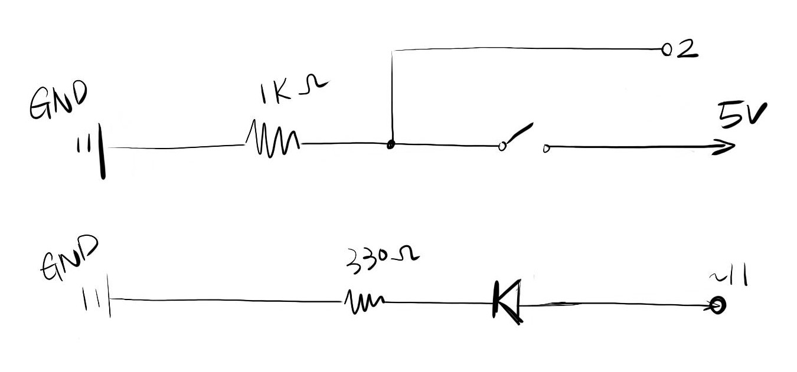
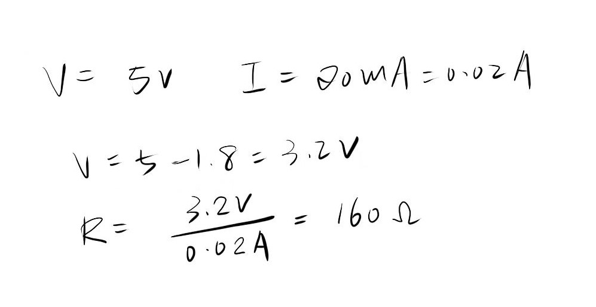

Alice's Assignment 2!
Schematic
In this schematic, one green LED light is connected to pin 11, with a resister controlling the current. A button and resistor is connected to 5V power source, and parallel with a pin 2 connection.
Calculations
I used the ohm's law to calculate the appropriate resistor to use. The resistor should be at least 160 ohm. I chose 330 ohm for this assignment. For the button, I chose a 1k resistor, because as long as there's current, the button works.
Circuit

I used an Arduino board for powering the LED and pushbutton. The Arduino board is connected to my computer for power source. Pin 11 is connected to the resistor and LED, and pin 2 is in parallel with a pushbutton circuit. The pushbutton receives power from the Arduino Board.
Code
/*
HCDE 439 Assignment #2
Alice Li
Jan.22nd, 2019
*/
// initiate the state of button with integer 0
int buttonState = 0;
void setup() {
//set pin 11 to be an output
pinMode(11, OUTPUT);
}
void loop() {
// read the digital state of pin two, whether the button is on
buttonState = digitalRead(2);
// if the button is on (pushed)
if (buttonState == HIGH) {
// the LED light from pin 11 turn on
digitalWrite(11, HIGH);
// the LED light will stay on for 0.1 second
delay(100);
// the LED light will turn off
digitalWrite(11, LOW);
// the LED light will be switched off for 0.1 second
delay(100);
} else {
// loop through the code, each time decreasing the brightness of the light
for (int i = 0; i < 256; i++) {
analogWrite(11, i);
// wait for 10 seconds
delay(10);
}
}
}
Circuit Operation
This gif shows the operation of the circuit. With the first LED fading until the button is pushed. When the button is pushed, the LED starts blinking.